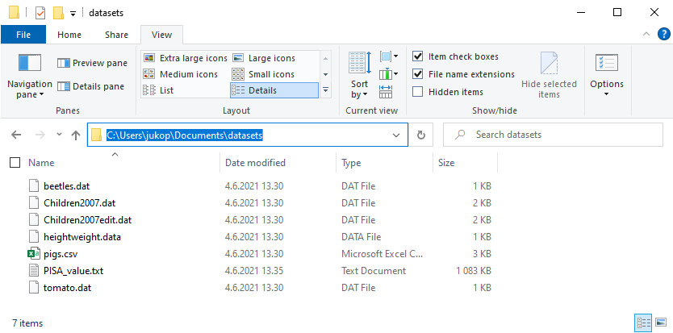
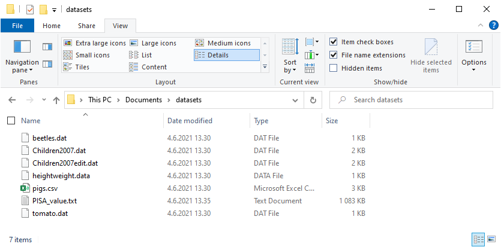

getwd()4 Datan lukeminen
Tässä luvussa tutustutaan datan sisään lukemiseen ja sisäänluetun datan tarkistamiseen. Tähän mennessä kaikki kurssilla käsitelty data on luotu R:ssä. Useimmiten R:llä käsiteltävä data on kuitenkin tallennettu tiedostoon, joka on luotu jollain ohjelmalla tai kirjattu esim. Excelissä.
Tässä luvussa esitellyt funktiot lukevat erilaisia tiedostoja, mutta kaikki palauttavat datakehikon. Datakehikko sopii aineiston käsittelyyn hyvin, sillä siihen voi tallentaa niin numeerisia kuin tekstimuotoisia muuttujia. Voit tarvittessa kerrata datakehikon toimintaa datakehikko-kappaleesta.
Lopussa käydään myös läpi tapoja lukea Excel-, SPSS- ja SAS-tiedostoja. Näitä tiedostoja ei käsitellä kurssin tehtävissä, mutta on hyvä tietää, että niitä voi lukea R:ään suoraan muuttamatta niitä ensin johonkin toiseen muotoon.
4.1 Hakemistopolut ja tiedostopäätteet
4.1.1 Hakemistopolut
Jotta aineiston lataus tiedostosta onnistuu, tulee käyttäjän olla tietoinen siitä, missä hakemistopolussa eli kansiossa R työskentelee lataushetkellä. R:llä on siis koko ajan jokin hakemistopolku, johon se viittaa. R:n käyttämän hakemistopolun saat selville komennolla getwd().
[1] "C:/Users/jukop/Documents"Tämän esimerkin tapauksessa R käyttää siis hakemistoa C:/Users/jukop/Documents. Jos kurssilla tarvittavan datasets.zip -tiedoston aineistot olisi purettu kansioon C:/Users/jukop/Documents/datasets, niin hakemistopolkju kannattaa vaihtaa juuri tähän hakemistoon. Se tapahtuu näin:
setwd("C:/Users/jukop/Documents/datasets")setwd ei tulosta mitään, jos kansion vaihtaminen onnistuu. Komennolla getwd() voidaan uudelleen tarkastaa, että hakemisto todella vaihtui. Vinkki! Ellet tiedä mikä on tarkka hakemistopolku, johon olet purkanut tiedostot, niin se onnistuu klikkaamalla Windowsissa tiedostoselaimen osoiteriviä. Voit kopioida hakemistopolun siitä, mutta vaihda kuitenkin kenoviivat (\) kauttaviivoiksi (/). Kenoviivoilla on R:ssä erityismerkitys merkkijonoissa, joten ne eivät kelpaa sellaisenaan. Kaksinkertainen kenoviiva (\\) toimisi myös.

4.1.2 Tiedostopäätteet
Windows ei oletuksena nykyisin näytä tiedostopäätteitä. Ne kannattaakin asettaa näkymään tiedostoselaimen avulla. Kyseinen asetus löytyy tiedostoselaimen View-välilehdeltä kohdasta Show/Hide valinta File extensions. Merkitse kyseinen kohta valituksi, jolloin näet tiedostopäätteet, kuten kuvassa. Nyt on helppoa käsittää, kun opettaja puhuu CSV-tiedostoista, että niiden tiedostopääte on .csv.

4.2 Tekstitiedostot
Tekstitiedosto tarkoittaa tässä tapauksessa tiedostoa, joka ei sisällä tekstin lisäksi mitään muuta, kuten erilaisia muotoilutietoja. Tekstitiedostojen yleisimmät tiedostopäätteet ovat .txt ja .csv (comma separated value). Esim. Excelin .xlsx-tiedostot tai Wordin .docx-tiedostot eivät ole tekstitiedostoja, koska niissä on paljon muutakin tietoa tekstin lisäksi.
4.2.1 read.table
Kun dataa tallennetaan tekstitiedostoon, tiedoston ensimmäisellä rivillä ovat usein sarakkeiden nimet, ja seuraavilla riveillä mahdollisesti rivin nimi, ja sitten sarakkeiden arvot. Jokaisen kentän tulee olla erotettu samalla merkillä (field separator character). Yleisiä erotinmerkkejä ovat sarkain eli tab, välilyönti ja pilkku. Alla olevassa esimerkissä on neljältä kuvitteelliselta koehenkilöltä mitattu puna-vihervärisokeuteen liitettyjen geenien OPN1LW ja OPN1MW ilmentymistasot (lukuarvot ovat allekirjoittaneen hihasta). Tässä eri arvot on erotettu sarkaimella.
Subject_ID OPN1LW OPN1MW
ANKL 11264 12365
DIPR 10636 12725
PEPA 5630 13248
BRWA 8294 13060Tämä data löytyy myös oheisesta tiedostosta gene_data.txt. Tekstitiedostot voi lukea sisään funktiolla read.table, jolla on tiedoston polun (file path) lisäksi monta muutakin argumenttia, joista tärkeimmät ovat:
header: looginen arvo (TRUE/FALSE), jolla kerrotaan funktiolle, onko ensimmäisellä rivillä sarakkeiden nimet vai eisep: erotinmerkki, jolla muuttujien arvot on eroteltudec: desimaalierotin eli desimaalilukujen merkki, jolla desimaalit on eroteltu. Tämä on tärkeä lähinnä suomalaisille, koska Suomessa desimaalierotin on jostain syystä pilkku, eikä piste kuten useimmissa muissa maissa.
Luetaan edellisen esimerkin data R:ään datakehikoksi hakemistosta data:
gene_data <- read.table("data/gene_data.txt", header = TRUE)
gene_data Subject_ID OPN1LW OPN1MW
1 ANKL 11264 12365
2 DIPR 10636 12725
3 PEPA 5630 13248
4 BRWA 8294 13060Yllä olevassa esimerkissä ei määritelty erikseen erotinmerkkiä, jolloin erotinmerkiksi tulkitaan kaikki tyhjä tila (white space) eli välilyönnit, sarkaimet jne. Halutessaan erotinmerkin voi myös asettaa. Jos erotinmerkki on sarkain, tulee asettaa sep = "\t"
gene_data <- read.table("data/gene_data.txt", sep = "\t", header = TRUE)
gene_data Subject_ID OPN1LW OPN1MW
1 ANKL 11264 12365
2 DIPR 10636 12725
3 PEPA 5630 13248
4 BRWA 8294 13060Kuten yllä huomattiin, sarkain erotinmerkkinä merkataan "\t", eikä lainausmerkeillä, joiden sisään laitettaisiin tyhjää tilaa sarkainnäppäimellä. Tämä on yksi esimerkki koodinvaihtomerkin (escape character) \ käytöstä. R:ssä ja ohjelmointikielissä ylipäätään kenoviiva toimii koodinvaihtomerkkinä, eli sitä ei käsitellä kuin muita merkkejä, vaan se muuttaa seuraavan merkin toimintaa. Usein tämä tarkoittaa sitä, että kenoviivan avulla merkataan sarkainta, rivinvaihtoa (newline, \n) ja muita erikoismerkkejä. Koodinvaihtomerkin käyttöä ei tarvitse osata tämän enempää, mutta se esitellään tässä, koska se aiheuttaa ongelmia Windowsin käyttäjille.
Windowsin tiedostopoluissa kansioiden välissä on kenoviiva, kun taas Mac- ja Linux-järjestelmissä käytetään kauttaviivaa /. Koska R:ssä kenoviiva on koodinvaihtomerkki, niin helpoin tapa on käyttää tiedostopoluissa Macin ja Linuxien tyyliä. Jos taas halutaan lukea tiedosto R:ään käyttäen Windowsin tapaisia tiedostopolkuja, kenoviivat \ pitää kirjoittaa kahteen kertaan eli \\, jotta R tulkitsee polun oikein. Tällöin ensimmäinen kenoviiva kertoo, että toinen kenoviiva on aito kenoviiva, eikä koodinvaihtomerkki.
Luetaan seuraavaksi sisään data-hakemistossa oleva tiedosto tooth_growth.csv, joka sisältää dataa tutkimuksesta c-vitamiinin vaikutuksesta hampaiden kasvuun marsuilla. .csv-tiedostopääte tulee sanoista comma separated value, eli tiedostossa arvot ovat eroteltu pilkulla. Asetetaan siis sep-argumentiksi ",". Tämä tiedosto sisältää myös rivien nimet ensimmäisessä sarakkeessa. Tämä voidaan kertoa read.table-funktiolle argumentilla row.names, jonka arvoksi voi asettaa sarakkeen numeron, josta rivien nimet napataan.
tooth <- read.table("data/tooth_growth.csv", header = TRUE, sep = ",", row.names = 1)
tooth len supp dose
34 9.7 OJ 0.5
16 17.3 VC 1.0
55 24.8 OJ 2.0
44 26.4 OJ 1.0
58 27.3 OJ 2.0
26 32.5 VC 2.0
14 17.3 VC 1.0
60 23.0 OJ 2.0
15 22.5 VC 1.0
9 5.2 VC 0.5Tutkimuksessa marsuille annettiin C-vitamiinia eri annoksina (dose, mitattu milligrammoina), joko appelsiinimehussa (OJ) tai askorbiinihappona (VC), ja mitattiin odontoblastien (hammasluun emosolu) pituus (len).
4.2.2 read.csv
Tiedostot, joissa arvot ovat pilkulla eroteltuina ovat niin yleisiä, että niiden lukemiseen on oma funktio: read.csv, joka on käytännössä sama funktio kuin read.table, mutta parametrien oletusarvot ovat erilaiset, niin että read.csv(file) ~ read.table(file, header = TRUE, sep = ",")).
tooth <- read.csv("data/tooth_growth.csv", row.names = 1)
tooth len supp dose
34 9.7 OJ 0.5
16 17.3 VC 1.0
55 24.8 OJ 2.0
44 26.4 OJ 1.0
58 27.3 OJ 2.0
26 32.5 VC 2.0
14 17.3 VC 1.0
60 23.0 OJ 2.0
15 22.5 VC 1.0
9 5.2 VC 0.54.2.2.1 read.csv2
HUOM: Koska Suomessa pilkkua käytetään desimaalierottimena, kenttien rajaaminen pilkulla ei toimi. Käytännössä tämä näkyy siten, että suomenkielinen Excel tallentaa .csv-tiedosto oletuksena muodossa, jossa desimaalierottimena on pilkku ja kenttien välissä puolipilkku ;. Jos siis olet tallentanut Excelistä taulukon .csv-muotoon ja sen lukeminen R:ään aiheuttaa hankaluuksia, kyse on todennäköisesti erotinmerkistä. Onneksi R:ssä on valmiina funktio read.csv2, joka osaa lukea puolipilkulliset .csv-tiedostot oikein.
4.3 Datakehikon tarkastelu
Kun data on luettu sisään R:ään, kannattaa aina tarkistaa, että kaikki data on luettu oikein. Tässä muutama vinkki datakehikon tutkimiseen, joista osaa käsiteltiin jo datakehikko-kappaleessa:
dim antaa datakehikon dimensiot, eli rivien ja sarakkeiden määrän.
View avaa datakehikon erilliseen ikkunaan, jossa sitä voi tarkastella. Suositellaan vain pienemmille datakehikoille str kertoo rivien ja sarakkeiden määrät sekä kaikkien sarakkeiden luokat. Kätevä tapa tarkistaa mm. että lukuja sisältävät sarakkeet eivät ole vahingossa muuttuneet merkkijonoiksi. table on kätevä kategoristen sarakkeiden tutkimiseen. Se kertoo, kuinka monta havaintoa muuttujan arvoilla on. table voi ottaa vastaan myös kaksi kategorista muuttujaa, ja laskee jokaiselle muuttujien arvojen yhdistelmälle havaintojen lukumäärän.
Katsotaan, mitä str kertoo juuri lukemastamme tooth-datasta.
str(tooth)'data.frame': 10 obs. of 3 variables:
$ len : num 9.7 17.3 24.8 26.4 27.3 32.5 17.3 23 22.5 5.2
$ supp: chr "OJ" "VC" "OJ" "OJ" ...
$ dose: num 0.5 1 2 1 2 2 1 2 1 0.5Kuten näimme aiemmin, mukana on 10 havaintoa ja 3 muuttujaa. len ja dose ovat luokkaa numeric eli desimaalilukuja, ja supp on luokkaa factor. Factor-tietotyyppiä käsitellään enemmän lineaaristen mallien yhteydessä, mutta sillä merkitään usein kategorisia muuttujia.
Lasketaan seuraavaksi, kuinka monelle marsulle annettiin appelsiinimehua ja kuinka monelle askorbiinihappoa.
table(tooth$supp)
OJ VC
5 5 Kumpaakin annostelutapaa käytettiin siis viisi kertaa. Voimme myös selvittää, miten eri annokset jakautuvat annostelutavan suhteen:
table(tooth$supp, tooth$dose)
0.5 1 2
OJ 1 1 3
VC 1 3 1Appelsiinimehuna annettiin siis 0.5 mg ja 1 mg annoksia kumpaakin 1 kappale, ja 2 mg annoksia 3 kappaletta.
4.3.1 R:n sisäänrakennetut aineistot
R:ssä on monta sisäänrakennettua aineistoa. Näitä on kätevää käyttää nopeaan testaamiseen, ja ne vilahtelevatkin usein R-oppaissa. Esimerkiksi aikaisempi odontoblastien pituuksia sisältävä aineistomme on oikeastaan pieni otos R:n sisäisestä aineistotsa ToothGrowth.
R:n sisäiset aineistot ovat koko ajan käytettävissä, vaikka ne eivät näy RStudion ympäristössä (Environment). Voimme esimerkiksi katsoa, millainen rakenne kokonaisella ToothGroth-datalla on:
str(ToothGrowth)'data.frame': 60 obs. of 3 variables:
$ len : num 4.2 11.5 7.3 5.8 6.4 10 11.2 11.2 5.2 7 ...
$ supp: Factor w/ 2 levels "OJ","VC": 2 2 2 2 2 2 2 2 2 2 ...
$ dose: num 0.5 0.5 0.5 0.5 0.5 0.5 0.5 0.5 0.5 0.5 ...R:n aineistoja voi käyttää moneen eri tarkoitukseen, kuten datan visualisoinnin tai tilastollisten toimenpiteiden testaamiseen. Listan kaikista R:n sisäisitä aineistoista saa komennolla data(). Tarkempia tietoja yksittäisistä aineistoista saa help-sivulta kuten funktioden tapauksessa, esimerkiksi ?ToothGrowth
4.4 Muut tiedostot
4.4.1 Excel
Excelin käyttämiä .xlsx-tiedostoja voi lukea suoraan R:ään, vaikka jossain netissä olevissa ohjeissa suositellaan niiden muuntamista ensin .csv-muotoon. Tätä varten pitää asentaa readxl-paketti, minkä voi tehdä RStudion Packages-valikoksta tai suoraan komennolla install.packages("readxl"). Paketin funktiolla read_xlsx() voi lukea sisään .xlsx-tiedostoja, tai yksikkäitisä taulukon sivuja. Excel-tiedostojen kirjoittamiseen löytyy myös vastaava paketti writexl.
Vaihtoehtoinen paketti Excel-tiedostojen lukemiseen on openxlsx, jolla voi sekä lukea että kirjoittaa .xlsx-tiedostoja, mutta se on tyypillisesti hitaampi readxl ja writexl paketteihin verattuna.
4.4.2 SPSS
Eri tutkimusryhmissä dataa säilytetään usein SPSS-tiedostoissa (.sav). SPSS-tiedostojen käsittelyyn voi käyttää haven-paketin funktioita read_sav ja write_sav. haven-paketti sisältää myös funktiot Stata- ja SAS-tiedostoille.